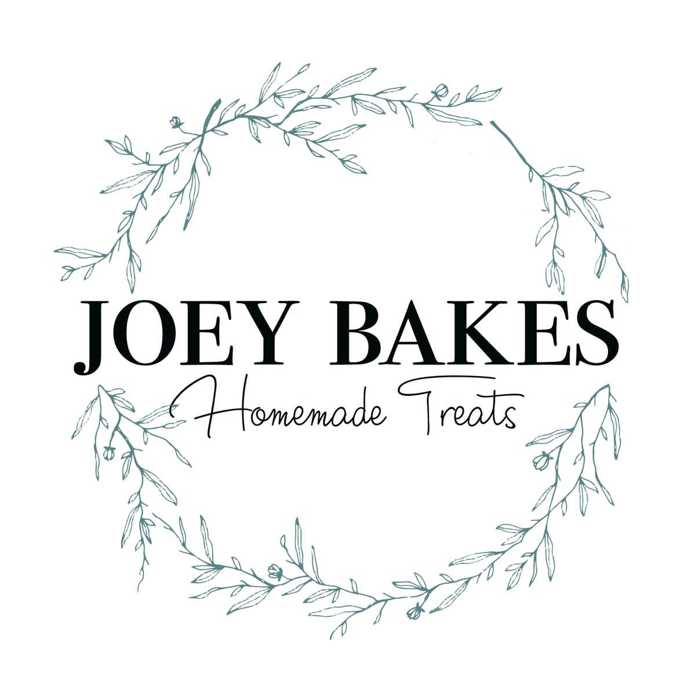
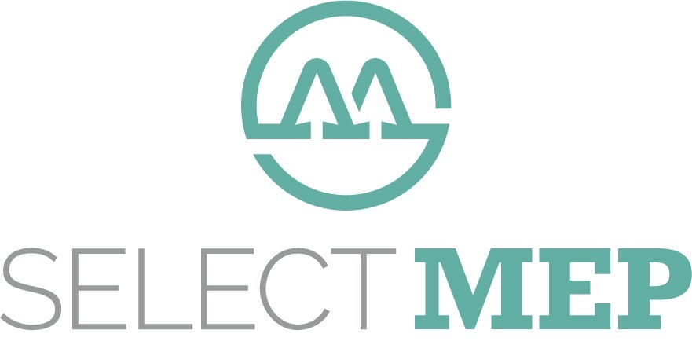
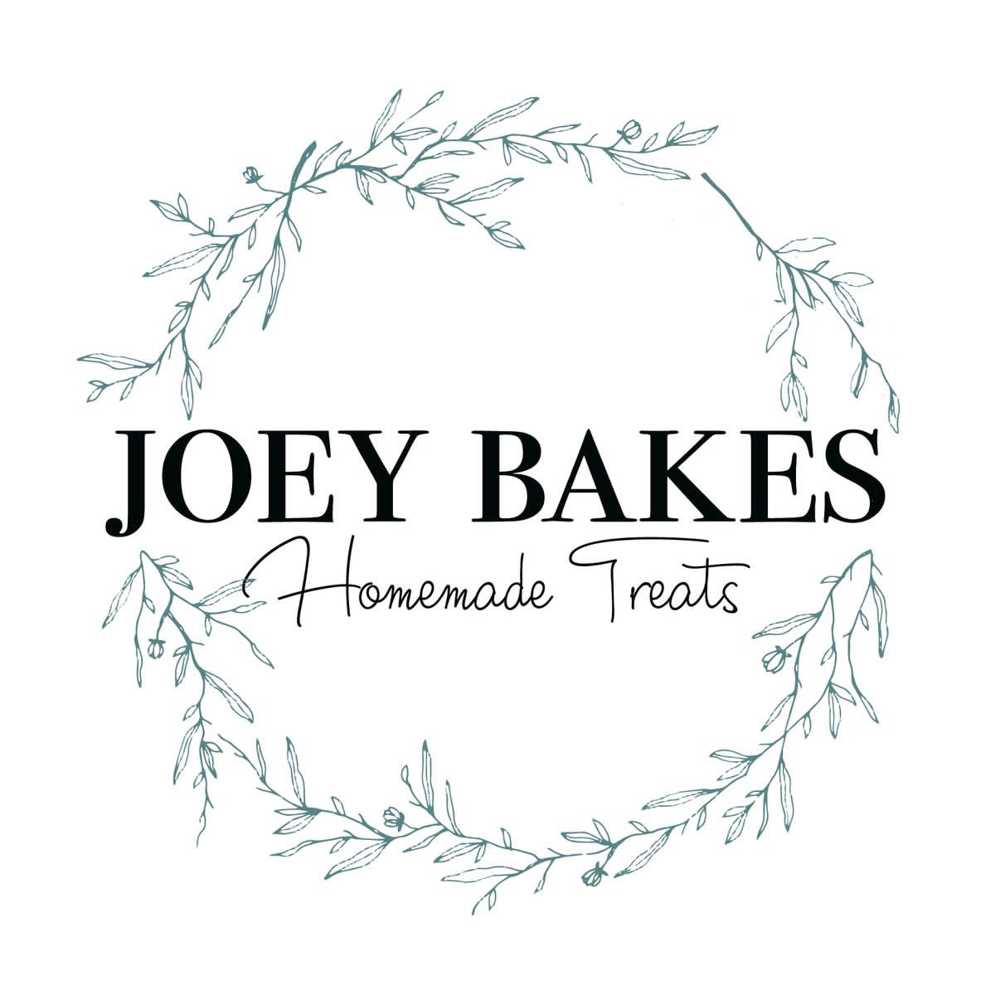
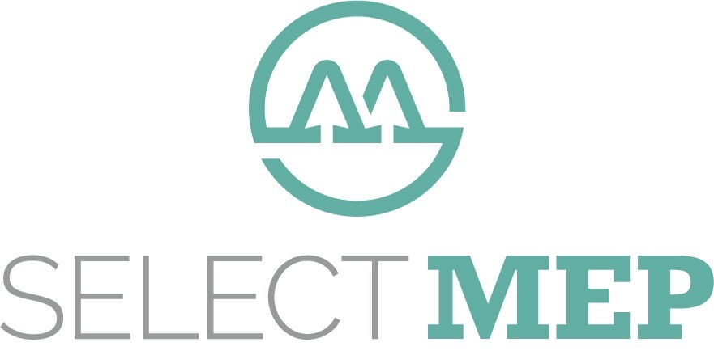

How Businesses Can Support The Keep Going Club
We’re a grassroots mental-health charity in Nottingham, creating events and creative safe spaces to help people breathe, connect, and, well, keep going.
We see people, not diagnoses. Every story matters, every experience is valid, and every person deserves compassion.
Your business can support us by:
- Sponsoring an event (help us afford tea, art supplies, and the occasional emergency biscuit run)
- Donating goods or services
- Hosting a fundraiser
- Letting us borrow your space for workshops or wellbeing sessions
What you get in return:
- Shoutouts on our socials
- Your logo on our site
- Public appreciation (the wholesome kind)
- A warm fuzzy feeling inside
 


